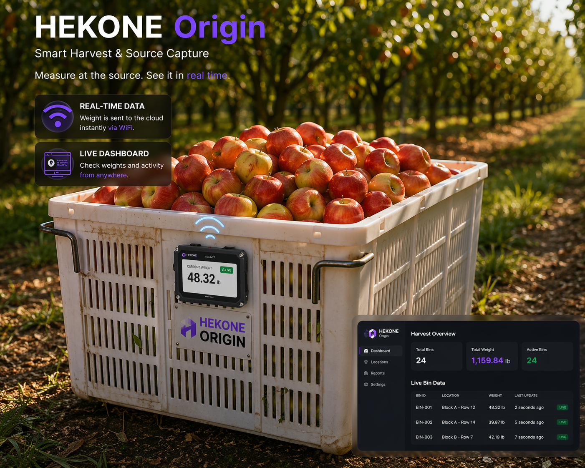
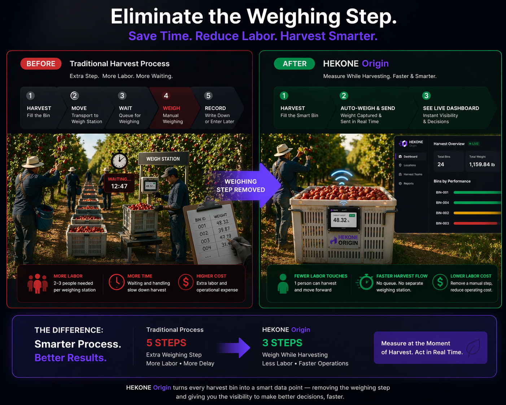
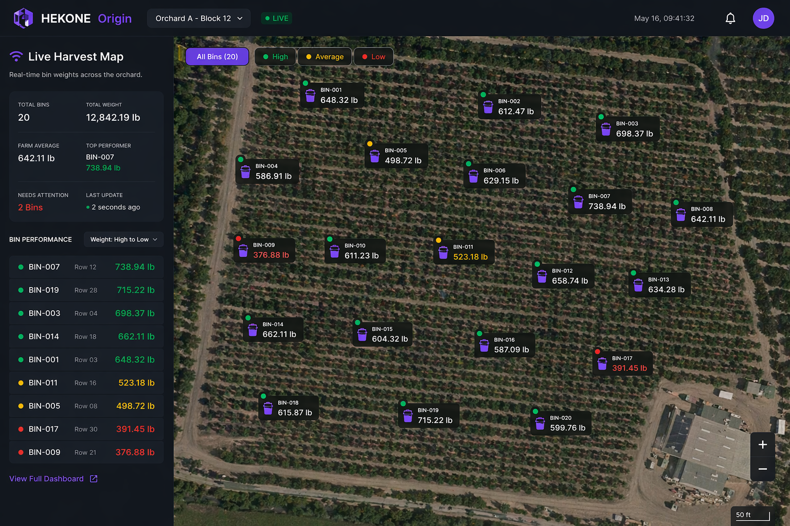
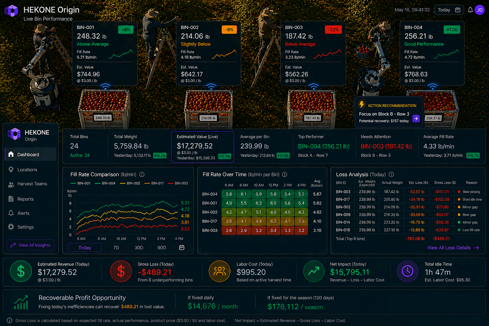
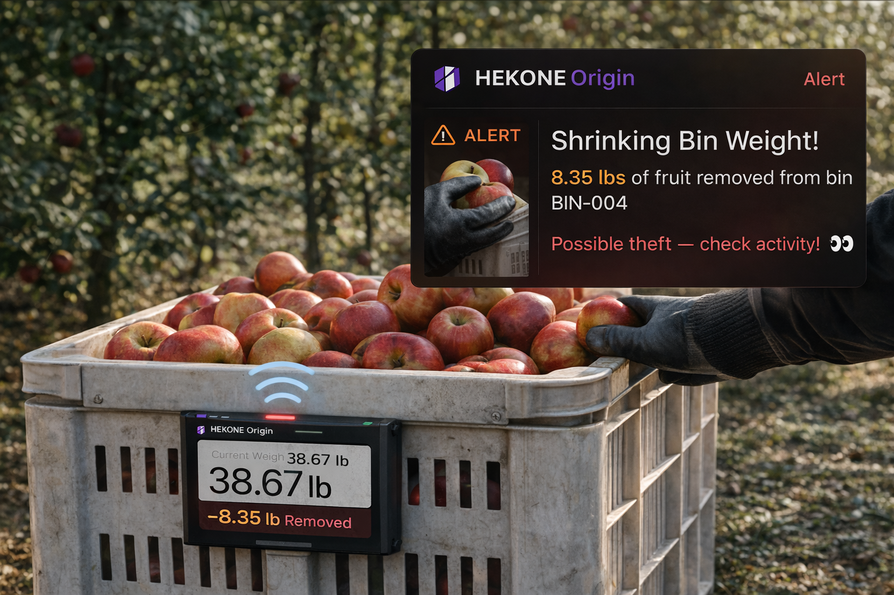
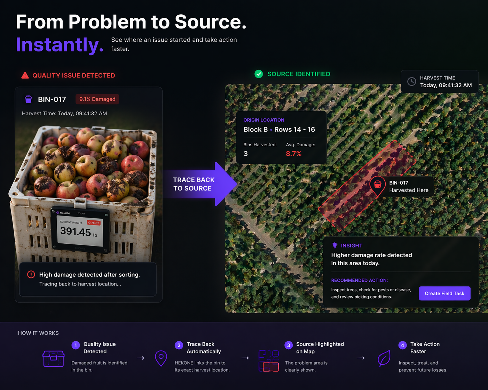

HEKONE Origin
Measure harvest where value is created. Detect loss before it leaves the field.
HEKONE Origin captures weight, time, and harvest location directly where harvest happens. Instead of waiting for delayed reports, operators can see field activity, hidden loss, and recoverable value in real time.
The goal is simple: measure at the source, reduce unnecessary handling, respond faster, and validate measurable ROI within a real harvest cycle.

Example daily loss exposure in a single active block when inefficiency and variation go unmeasured.
Example seasonal value at risk when delayed visibility hides field-level operational gaps.
Target reduction in labor touches by removing separate weighing and re-handling steps.
Designed to validate measurable operational ROI within one harvest cycle or pilot period.
You are losing money in the field, and you cannot see where.
Most harvest operations still rely on delayed measurement while labor cost, shrinkage, and output variance continue to rise.
HEKONE Origin is designed to show which blocks are underperforming, where harvest is slowing, and what value may be recoverable before small inefficiencies compound.
Sample recoverable loss from slow fill rate, underfilled bins, or delayed response.
Sample untracked variance when field performance is measured too late.
Eliminate the weighing step.
Replace a slower 5-step harvest process with a 3-step real-time system that measures while harvesting.
Instead of moving material through an added weighing checkpoint, HEKONE Origin captures data where harvest already happens. That means fewer handoffs, faster information, and less delay between collection and decision.

See harvest activity across the orchard as it happens.
Know where bins are, how fast they are filling, and which areas are outperforming or falling behind.
Field connectivity is not always perfect, so the system is designed around practical deployment logic: capture locally, sync reliably, and preserve operational visibility when coverage is inconsistent.

This is not just real time when the network is perfect. It is intended to be useful in the field conditions operators actually deal with.
Know what is making money, and what is losing it.
See output, picking speed, lost value, and action recommendations in real time.
HEKONE Origin turns harvest activity into financial insight, so teams can respond before small inefficiencies become larger operational losses.

Catch loss the moment it happens.
When bin weight drops unexpectedly, HEKONE Origin can surface the event immediately and show operators what needs to be checked.
This moves the system beyond passive measurement into active operational awareness for shrinkage, handling issues, or irregular movement.

Real-time alerting can help reduce unnoticed loss, improve accountability, and make field events visible before they become larger financial issues.
Trace every problem back to its source.
Connect downstream quality issues directly to the harvest area where they started.
HEKONE Origin links each bin to weight, time, and location, turning delayed discovery into a faster inspection and response path.

This is not another tool. It is a missing operational data layer.
Most systems measure later, report later, or track movement separately. HEKONE measures at the moment the physical event actually happens.
- Delayed weighing after harvest activity has already moved on
- Location data without direct connection to measured field output
- Manual reporting that arrives too late for immediate response
- Visibility into movement, but limited visibility into source-side operational loss
- Measurement at the source, at the time the event happens
- Structured linkage between weight, time, and harvest location
- Real-time visibility that supports faster field decisions
- A clearer path to labor savings, loss reduction, and measurable ROI
Existing systems may record output later or track movement separately. HEKONE Origin turns the harvest event itself into immediate operational intelligence.
Built for practical deployment in real operating conditions.
Field technology has to work where operations are demanding, with dirt, handling, motion, weather exposure, and inconsistent connectivity.
HEKONE Origin is being developed for harsh field use, with a durability target aimed at dust protection, splash resistance, repeated handling, vibration, and daily outdoor exposure.
Real-time visibility matters, but reliability matters more. The system is intended to capture data at the edge and sync through a practical field connectivity model rather than assuming perfect continuous wireless coverage.
Adoption drops when harvest crews slow down. HEKONE Origin is designed to fit into the harvest process with minimal added steps and no separate weighing station dependency.
Large operations may have hundreds or thousands of bins. The deployment logic is to start where the labor, visibility, or quality value is highest, validate ROI, and expand based on measured operational gain.
Recover lost value in your first season.
Move from delayed reporting to real-time operational control, with pilot metrics designed to quantify real financial impact.
Example field-level scenario from unmeasured inefficiency, underfilled bins, or delayed response.
Example value hidden when field performance is measured after the opportunity to act has passed.
Target reduction in manual handling, separate weighing, movement, and data entry steps.
Designed to demonstrate economic value within the first deployment cycle or harvest season.
These figures represent example operating scenarios and expected pilot ranges. Final performance claims should be validated against real deployment data.
From source to consumption, one continuous physical data layer.
Origin captures value at the source. Dispenser captures value at the point of consumption. Together, they create a physical intelligence system that turns real-world operations into measurable data.
Source-side visibility for harvest, field operations, and initial handling.
Output-side visibility for dispensing, usage, and physical interaction data.
Deploy in the field. See real results.
We are working with a limited number of early operators to validate real-world impact in agriculture, harvest operations, and source-side field visibility.
Pilot engagement is intended to validate deployment practicality, durability in field use, workflow fit, labor reduction, loss detection, and measurable ROI in real operating conditions.